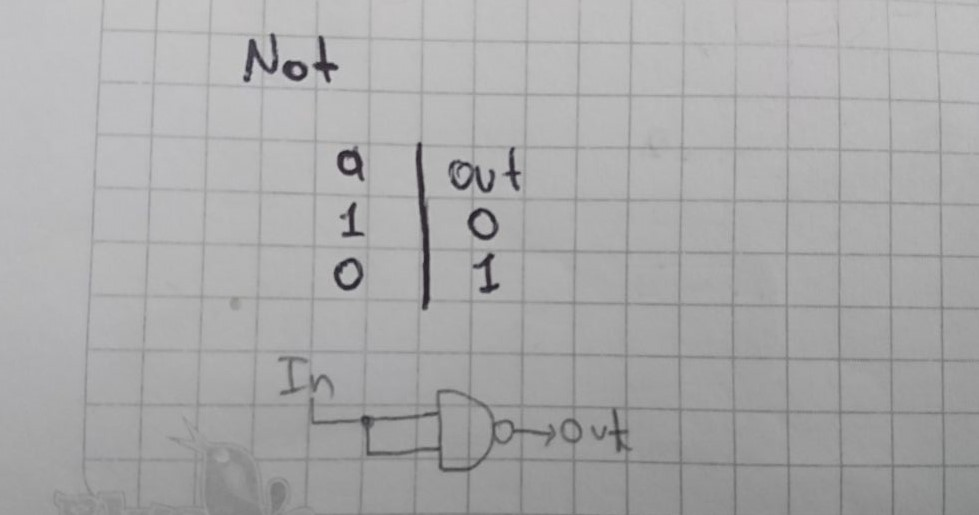

-

Project 1: Elementary Logic Gates
Todo este proyecto se se realizó en base a nand2teris
Puedes descargar la carpeta con los resultados finales de esta parte del proyecto dando click aquí.
NAND
Tabla de verdad del NAND y su visualización grafica
NOT
Observando un poco la tabla de verdad del NOT podremos darnos cuenta de que solo hay un dato como entrada y otro único dato como salida. Como tenemos que utilizar la compuerta NAND para la implementación de esta compuerta lo más sencillo es distribuir la única entrada que tenemos en el NOT en las entradas de la compuerta NAND para así obtener una única salida.
Tabla de verdad del NOT y su visualización grafica
Código con el que se solucionó el ejercicio
AND
Para poder armar esta compuerta lógica debemos observar y darnos cuenta de que las salidas de la compuerta AND son totalmente opuestas a las del NAND, así que lo único que tendríamos que hacer es negar la salida de un NAND para así obtener nuestro AND.
Tabla de verdad del AND
Visualización grafica del AND
Código con el que se solucionó el ejercicio
OR
Al observar muy bien la tabla de verdad de la compuerta OR podremos darnos cuenta de que la salida de esta solo es cero cuando las dos entradas son cero. Ahora, si observamos la tabla de la compuerta NAND podremos percibir que necesitamos obtener un valor negado de cuando sus entradas son la misma, para poder obtener un OR. Para esto podemos usar dos compuertas NAND que reciban el mismo valor de entrada, lo que nos proporcionará dos valores de salida y pasándolas por otra puerta NAND podemos obtener el resultado esperado.
Tabla de verdad del OR
Visualización grafica del OR
Código con el que se solucionó el ejercicio
XOR
En este caso lo que debemos obtener es que cada una de nuestras entradas llegan en primera instancia a una compuerta NAND y a una compuerta OR, de estas dos compuertas obtendremos dos salidas que no pondremos utilizar aun por lo que debemos conectar estas dos salidas a una compuerta AND, quien se encargará de multiplicar los valores que en esta entren y nos entregará una salida correspondiente a la compuerta XOR.
Tabla de verdad del XOR
Visualización grafica del XOR
Código con el que se solucionó el ejercicio
MUX
Ahora nos enfrentamos a algo completamente diferente, ahora a partir de las entradas que ingresaban anteriormente a nuestras compuertas, el multiplexor cuenta con un selector que lo que hace es que dependiendo de su estado nos dará una salida con el valor de una entrada o el de la otra.
Tabla de verdad del MUX
Visualización grafica del MUX
En esta imagen podremos darnos cuenta de como se aplicó el método para crear funciones booleanas, lo que facilitó enormemente haber llegado a esta solución.
Código con el que se solucionó el ejercicio
DMUX
El DMUX lo que hace es que cuenta también con un selector lo que le permite escoger de acuerdo con su estado por cuál de sus dos salidas se obtiene la señal. Lo que se hizo acá fue que se conectó la entrada en dos compuertas AND y de igual manera se hizo lo mismo con el selector pero cuidando que una de estas señales es negada.
Tabla de verdad del DMUX
Visualización grafica del DMUX
Código con el que se solucionó el ejercicio
NOT16
El NOT16 simplemente es un NOT que no recibe únicamente un dato y genera otro, sino que ahora recibe un bus 16 datos y genera un bus 16. Para esto lo que hacemos es que conectamos 16 NOT cada uno a uno de los 16 datos que están entrando así obtener la misma cantidad de valores a la salida.
Código con el que se solucionó el ejercicio
AND16
En esta compuerta pasa de una manera similar a lo que pasa con el NOT16, así que no necesitaré repetir la misma explicación de nuevo.
Código con el que se solucionó el ejercicio
OR16
En esta compuerta pasa de una manera similar a lo que pasa con el NOT16 y el AND16, así que no necesitaré repetir la misma explicación de nuevo.
Código con el que se solucionó el ejercicio
MUX16
En esta compuerta pasa de una manera similar a lo que pasa con el NOT16, el AND16 y el OR16, así que no necesitaré repetir la misma explicación de nuevo.
Código con el que se solucionó el ejercicio
OR8WAY
Para realizar esta compuerta lógica utilicé únicamente compuertas OR, en total fueron 7 compuertas, 4 principalmente para conectar a cada uno de las 8 señales de la entrada, luego otros 2 para conectar las 4 salidas del proceso anterior y por ultimo otra compuerta para lograr obtener una única salida.
Visualización grafica del OR8WAY
Código con el que se solucionó el ejercicio
MUX4WAY16
En este caso lo que se utilizaron fueron 2 multiplexores conectados cada uno a dos entradas de 16 señales cada una, luego necesitamos simplificar aún más la señal para que podemos obtener una sola salida, de tal manera utilizamos otro multiplexor para poder obtener una sola salida con un bus[16].
Visualización grafica del MUX4WAY16
Código con el que se solucionó el ejercicio
MUX8WAY16
Ahora en el MUX8WAY16 cuenta con 8 entradas con bus[16] y una única salida. Lo que podemos hacer es repartir estas ocho entradas en dos MUX4WAY16 reduciendo así esto a dos salidas, pero como aun nos falta reducir más la cantidad de salidas utilizamos un MUX16 para poner obtener 1 única salida de un bus[16]
Visualización grafica del MUX8WAY16
Código con el que se solucionó el ejercicio
DMUX4WAY
Para nuestro DMUX4WAY necesitamos conseguir 4 salidas, de esta manera analizando un poco nuestra situación, podemos darnos cuenta de que los DMUX pueden producir dos salidas, de esta manera si utilizamos 3 DMUX conectado podremos obtener nuestras 4 salidas.
Visualización grafica del DMUX4WAY
Código con el que se solucionó el ejercicio
DMUX8WAY
De una forma muy parecida utilizamos simultáneamente DMUX para conseguir a partir de una entrada las 8 salidas que posee el DMUX8WAY
Visualización grafica del DMUX8WAY

Código con el que se solucionó el ejercicio
LISTA DE CONCEPTOS.
1. En el momento en que se cambia el orden, sigue funcionando porque no afecta que el uno se ejecute antes que el otro, ya que no dependen del otro para lanzar un resultado.
2. Una función booleana se representa como una suma de mini términos, sencillamente fijándose en la tabla de valores de verdad el valor que tiene la salida. Sabiendo los valores de la salida es sino sumar un mini termino que contenga la salida con valor 1 y sumarlo con los otros mini términos que también su salida sea igual a 1.
3 y 4.
5.
6. Estos diagramas se realizaron durante todo el proyecto.
7. Este punto tambien lo realicé en el taller y en las imagenes se ve la evidencia.
- 8. a. Es importante realizar los ejercicios de esta manera porque así iremos formando nuestro conocimiento paso a paso, para no quedar con baches que después nos puedan perjudicar a la hora de seguir trabajando durante los proyectos.
- b.Si hacemos esto el chip no lo podremos cargar, debido a que se necesita la información de las compuertas XOR y AND para poder correr el programa y representar la solución.
- c. Si no tenemos partes conectadas a nuestro chip, este puede generar un error al momento de implementarlos.
- d. El bit de mayor peso es el bit que se puede encontrar al lado izquierdo.
- e. El bit de menor peso es el bit que se puede encontrar al lado derecho.
Puedes descargar la lista de chequeo dando click aquí.
Puedes descargar la AutoEvaluación dando click aquí.